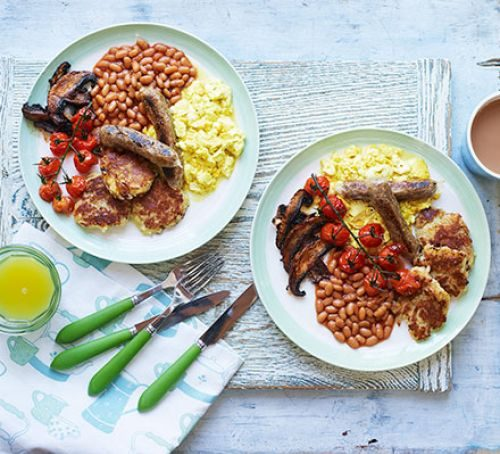

Description
Meat Lovers, move aside... There's a new brunch sheriff in town, and this one didn't murder anything (or anyone). Hang on to your hats and get a load of this recipe.
Ingredients:
- 4 Richmond Vegan Sausages
- 4 Richmond Vegan Bacon Rashers
- 1 Large Avocado
- 2 Slices, Sourdough
- 400g Tin of Beans
- Rocket (handful)
- 6 Hash Browns
Steps:
- Preheat the oven to 200.C on fan.
- Add Hashbrowns into oven on Baking tray and cook for 20 Minutes or until golden brown. Turn halfway through cooking.
- Heat oil in pan and add sausages for 5 minutes, at which point, add the bacon and cook for a further 5 minutes.
- Slice Avocado into bowl and mash, mixing in your choice of seasoning.
- Put Sourdough slices in Toaster and toast for 4 minutes.
- Pour beans into bowl, season and microwave for 2 minutes, stiring halfway through.
- Serve on plates and garnish with Rocket.
Back to Top
Back to Recipes